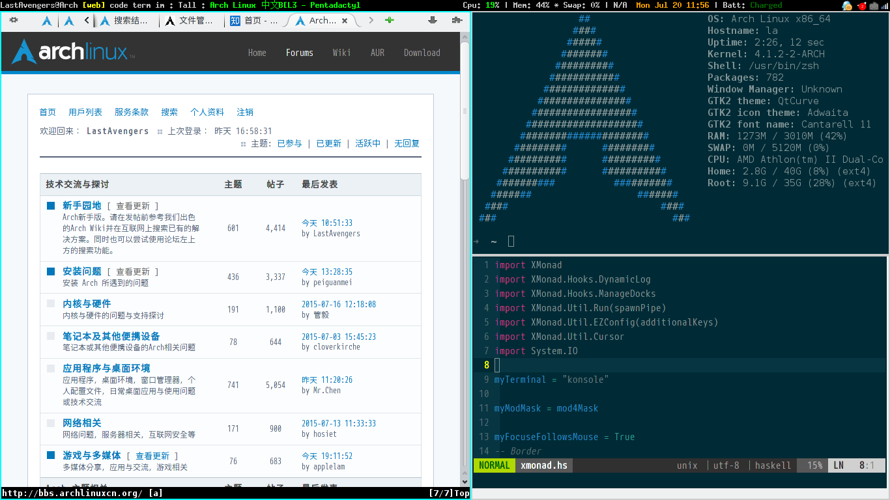

Arch Linux 折腾小记
Contents
Arch Linux 折腾小记#
提示
这是一篇迁移自 Jekyll 的文章，如有格式问题，可到 ⛺ SilverRainZ/bullet 反馈
这几天一直在折腾 Arch Linux 上的桌面, 弄到今天终于差不多了. 先上张图:
以 XMonad 为 WM 的桌面#
没有用 DE, WM 用的是 XMonad.
关于 XMonad 的默认快捷键, XMonad Guide Tour 这篇官方的这篇文档很容易看懂.
需要安装的包如下:
xmonad, xmonad-contrib
xmobar
dmenu
trayer trayer-srgAUR
feh
scrot
compton
xmobar, 配置文件在.xmobarrc, 是个基于文字的状态栏, 可以显示从 stdin 接收到的内容,
也可以自己获取系统信息, 我这里的中文显示还有问题, 部分中文乱码, 应该是字体的锅.
2015-8-30: 使用 ArchLinux Wiki 中建议的字体, 效果良好.
font = "xft:Bitstream Vera Sans Mono:size=9:bold:antialias=true"
dmenu 是个启动器, 功能比较简单, 所以不需要什么特殊的配置, 在 XMonad 里按mod + q触发.
trayer 是个系统托盘, 用来容纳各种图标, 启动选项如下:
2015-8-30: trayer 不支持多个屏幕, 建议使用 AUR 里的 trayer-srgAUR
trayer --edge top --align right --widthtype percent --width 11 \
--SetDockType true --SetPartialStrut true --transparent true --alpha 0 \
--tint 0x000000 --expand true --heighttype pixel --height 17 --monitor primary
本来已经设置了 xmobar 占据屏幕的 90%, 而 trayer 占 10%, 不过这样仍然会在屏幕上留下间隙, 所以这里设置成占据屏幕的 11%.
feh 用来设置桌面背景, 设置背景很有必要, 如果不设置的话, 关闭窗口的时候不会有明显的反馈, 浮动窗口也会留下难看的拖影.
feh --bg-scale /home/la/Pictures/Wallpapers/blog-bg.jpg
scrot 截图的快捷键在 XMonad 的配置文件~/.xmonad/xmonad.hs里面绑定:
defaultConfig
`additionalKeys`
[ ( (controlMask, xK_Print)
, spawn "sleep 0.2; scrot -s -e \'mv $f ~/Pictures/Screenshots/\'"
)
, ((0, xK_Print), spawn "scrot -e \'mv $f ~/Pictures/Screenshots/\'")
]
-s参数可以让你自己选择截图的区域, 不过这个工具竟然没法指定图片的存放位置,
只能在截图后用-e 'mv $f ~/Pictures/Screenshots'把截图放到指定目录.
上面这些配置大多写在启动脚本startup.sh里, 每个命令后边都得加上一个&.
无线网络管理#
为了更方便地连接无线网络, 安装如下包:
networkmanager
network-manager-applet
gnome-keyring
注意如果你之前连接无线网络用的是netctl的话, 记得把有关的服务给 disable 了,
因为 networkmanager 和他有冲突, 安装完后执行 NetworkManager 启动服务.
network-manager-applet 是 networkmanager 的前端.
似乎不安装 gnome-keyring的话就无法连上加密的无线网络.
IM#
QQ#
TM2013 可能是运行在 Wine 上表现最好的一个版本了, 我下载了 邓攀打包的TM2013, 似乎没有预期中的 out of box, 字体不行, 密码输入也不行. 不过根据错误提示和 Arch Linux Wiki, 装了几个包就解决问题了.
➜ pacman -S lib32-ncurses lib32-mpg123
➜ winetrick riched20 ie6 mfc42 cjkfonts wenquanyi
其他#
IRC 客户端用火狐的 ChatZilla
Telegram 客户端用 Cutegram, 得装
fcitx-qt5才能正常输入, 另 TG 似乎已经被墙(手机上却仍然可以登录), Cutegram 无法登录, 挂个代理就行.qTox 也还凑合, 主要是可以听歌.
GTK#
默认的 gtk 界面在 XMonad 下相当地丑, 可以安装lxappearance来调整 GTK 的主题.
对于 Qt 程序, dolphin 有很好看的外观, 但是同为 kde-applications 的 konsole 的界面却依然很丑…
Update
2015-7-24: 经过 IRC 里 👤farseerfc 前辈和 👤quininer 的 调教 ,
发现原来 dolphin 还是 kde4 而 konsole 已经是 kde5 了.
2015-8-30: 安装社区源gnome-breeze-git主题, 以及 plasma5 的breeze主题,
可以有比较统一的外表. 设置 Qt5 应用程序的主题可以设置环境变量QT_STYLE_OVERRIDE=breeze
输入法:#
在~/.xprofile中加入:
export GTK_IM_MODULE=fcitx
export QT_IM_MODULE=fcitx
export XMODIFIERS="@im=fcitx"
并在启动脚本里启动 fcitx.
配置文件#
上面有提到的全部配置文件参见:
如果你有任何意见，请在此评论。 如果你留下了电子邮箱，我可能会通过 回复你。